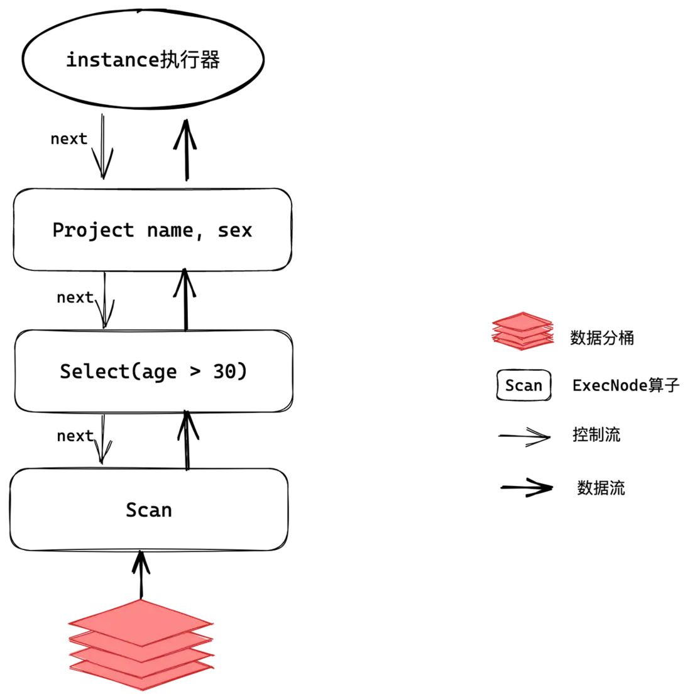
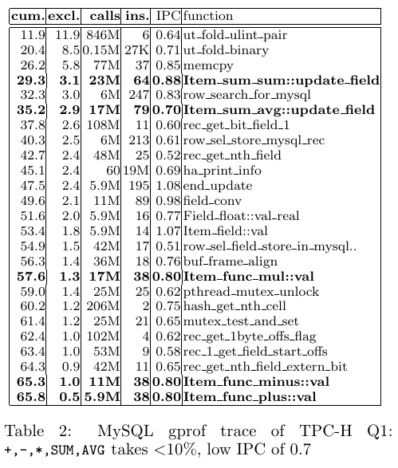

executor
TODO
- 统一案例，保证每个迭代器都有一个可执行可调式的案例
- 调查分析迭代器的优化方向，当前迭代器实现复杂度过高
- 补充一些迭代器的实现细节
概述
MySQL执行器的架构体现了现代数据库系统的设计理念，通过迭代器模式1实现了执行操作的标准化和模块化。这种设计不仅提高了代码的可维护性， 还为性能优化和功能扩展提供了良好的基础。整个执行器与查询优化器、存储引擎紧密配合，形成了MySQL查询处理的完整流水线。
迭代模型/火山模型（Iterator Model）作为业界常见的执行模型，其核心思想是将每一种操作抽象为一个 Operator， 整个 SQL 查询被构建成一个 Operator 树。查询执行时，树自顶向下调用 next() 接口，数据则自底向上被拉取处理， 因此这种处理方式也被称为拉取执行模型（Pull Based）。火山模型因其具有很高灵活性高、可扩展性好、易于实现和优化等特性，被广泛应用于数据库查询优化和执行中。

while (true) {
slot = root->next();
if (slot == NULL) {
break;
}
// addtional processing
if (filter(slot))
yield slot;
}
一般实现显式指定算子的返回数据，但是 MySQL 隐藏这个过程，执行器中的数据流动实际是依赖于表以及field或者有算子自行维护，更类似于保存在执行中的上下文
handler
存储引擎层采用可动态加载的插件形式，为方便支持多种存储引擎，将存储引擎接口进行抽象化，server 层通过统一的接口访问存储引擎， 该抽象类即为 handler。各个存储引擎只需要实现 handler 相应的接口，server 层即可访问该存储引擎。
具体来说， handlerton 是MySQL中存储引擎与服务器层之间的核心接口结构体，它作为单例模式存在，代表一个特定的存储引擎。他定义了和具体得表无关的 存储引擎相关的操作接口，例如创建 handle，表空间管理等。
static handlerton *installed_htons[128];
enum legacy_db_type {
DB_TYPE_UNKNOWN = 0,
DB_TYPE_DIAB_ISAM = 1,
DB_TYPE_HASH,
DB_TYPE_MISAM,
DB_TYPE_PISAM,
DB_TYPE_RMS_ISAM,
DB_TYPE_HEAP,
DB_TYPE_ISAM,
DB_TYPE_MRG_ISAM,
DB_TYPE_MYISAM,
DB_TYPE_MRG_MYISAM,
DB_TYPE_BERKELEY_DB,
DB_TYPE_INNODB,
DB_TYPE_GEMINI,
DB_TYPE_NDBCLUSTER,
DB_TYPE_EXAMPLE_DB,
DB_TYPE_ARCHIVE_DB,
DB_TYPE_CSV_DB,
DB_TYPE_FEDERATED_DB,
DB_TYPE_BLACKHOLE_DB,
DB_TYPE_PARTITION_DB, // No longer used.
DB_TYPE_BINLOG,
DB_TYPE_SOLID,
DB_TYPE_PBXT,
DB_TYPE_TABLE_FUNCTION,
DB_TYPE_MEMCACHE [[deprecated]],
DB_TYPE_FALCON,
DB_TYPE_MARIA,
/** Performance schema engine. */
DB_TYPE_PERFORMANCE_SCHEMA,
DB_TYPE_TEMPTABLE,
DB_TYPE_FIRST_DYNAMIC = 42,
DB_TYPE_DEFAULT = 127 // Must be last
};
handler 接口定义了存储引擎的基本操作，包括表的创建、删除、打开、关闭、插入、删除、更新、查询等。handler 接口的具体实现由各个存储引擎自行实现， 没有要求存储引擎必须实现全部的接口，除了少部分核心操作定义为纯虚函数之外，其他大部分接口显然是可选的；存储引擎可以按照自己的特点按需实现， 例如 InnoDB 存储引擎实现了事务相关的接口，而 MyISAM 则没有实现这些接口，blackhole没有使用更新删除等接口。
一些重点接口如下:
| function | desc |
|---|---|
| ha_rnd_next | 随机读取下一行数据，一般用于 seqscan |
| ha_index_init | 初始化 index 扫描 |
| ha_index_first | 读取指定 index 的第一行 |
| ha_index_next | 读取指定 index 的下一行 |
| ha_index_read_map | 指定读取满足 key 的行 |
| ha_index_next_same | 读取指定满足 key 的下一行 |
| multi_range_read_init | 初始化 mrr 扫描 |
| ha_multi_range_read_next | 读取 mrr 下一行 |
表达式
SQL 语句中的表达式运算使用的是 Item 的 val_xx 接口，在执行中直接调用对应的接口获取值，例如
filter 预期得到的结果是 bool，直接调用 m_condition->val_int() 获得条件的值。
-
普通表达式
- 如果是常量，直接 Item 本身就保存有具体的值，直接调用 val_xx 接口获取值
- 如果是 Field，需要确保 Field 的数据已经被填充，即关联的表已经读取对应的值
-
聚合表达式
- 聚合表达式只有在聚合迭代器运算完成之后，才能进行输出，在运行过程中，都是在进行一种累计操作
- 最终输出也是调用的 val_xx 接口获取值
-
子查询
-
子查询需要区分相关子查询和非相关子查询，
- 对于非相关子查询，MySQL 允许非相关子查询在优化阶段直接物化，此时执行计划显示
Rows fetched before execution，它在优化阶段就已经填充临时表
如果 MySQL 需要支持执行计划缓存，则这是一个阻碍
- 对于相关子查询，在表达式中使用 Item_subselect 表示，表达式计算的时候最终调用
Item_subselect::exec获取子查询的值
// 非相关子查询使用 optimize_derived 直接物化子查询 #0 TableScanIterator::Read (this=0x718bc4a89920) at sql/iterators/basic_row_iterators.cc:286 #1 0x000063674e8ae103 in FilterIterator::Read (this=0x718bc4a89970) at sql/iterators/composite_iterators.cc:93 #2 0x000063674e8aeb93 in AggregateIterator::Read (this=0x718bc4a89998) at sql/iterators/composite_iterators.cc:333 #3 0x000063674e4c95fe in Query_expression::ExecuteIteratorQuery (this=0x718bc4e1fc58, thd=0x718bc4d871a0) at sql/sql_union.cc:1832 #4 0x000063674e4c9a05 in Query_expression::execute (this=0x718bc4e1fc58, thd=0x718bc4d871a0) at sql/sql_union.cc:1888 #5 0x000063674e27bc29 in Table_ref::materialize_derived (this=0x718bc4e27cd0, thd=0x718bc4d871a0) at sql/sql_derived.cc:1843 #6 0x000063674e27b63c in Table_ref::optimize_derived (this=0x718bc4e27cd0, thd=0x718bc4d871a0) at sql/sql_derived.cc:1728 #7 0x000063674e306f54 in JOIN::optimize (this=0x718bc4a875d8, finalize_access_paths=true) at sql/sql_optimizer.cc:441 #8 0x000063674e3eef91 in Query_block::optimize (this=0x718bc4da0698, thd=0x718bc4d871a0, finalize_access_paths=true) at sql/sql_select.cc:2147 #9 0x000063674e4c60e9 in Query_expression::optimize (this=0x718bc4da05a0, thd=0x718bc4d871a0, materialize_destination=0x0, create_iterators=true, finalize_access_paths=true) at sql/sql_union.cc:1030 #10 0x000063674e3ec6be in Sql_cmd_dml::execute_inner (this=0x718bc4e29b70, thd=0x718bc4d871a0) at sql/sql_select.cc:1125 // 相关子查询在表达式运算的时候，调用子查询获得结果 #0 RefIterator<false>::Read (this=0x718bc4a895b8) at sql/iterators/ref_row_iterators.cc:359 #1 0x000063674e8aeb93 in AggregateIterator::Read (this=0x718bc4a89600) at sql/iterators/composite_iterators.cc:333 #2 0x000063674e8ae103 in FilterIterator::Read (this=0x718bc4a89920) at sql/iterators/composite_iterators.cc:93 #3 0x000063674e8ae72e in LimitOffsetIterator::Read (this=0x718bc4a89948) at sql/iterators/composite_iterators.cc:246 #4 0x000063674e4c95fe in Query_expression::ExecuteIteratorQuery (this=0x718bc4e20878, thd=0x718bc4d871a0) at sql/sql_union.cc:1832 #5 0x000063674e4c9a05 in Query_expression::execute (this=0x718bc4e20878, thd=0x718bc4d871a0) at sql/sql_union.cc:1888 #6 0x000063674de5e6cc in Item_subselect::exec (this=0x718bc4e1f000, thd=0x718bc4d871a0) at sql/item_subselect.cc:786 #7 0x000063674de5ed1f in Item_in_subselect::exec (this=0x718bc4e1f000, thd=0x718bc4d871a0) at sql/item_subselect.cc:892 #8 0x000063674de62b22 in Item_in_subselect::val_bool_naked (this=0x718bc4e1f000) at sql/item_subselect.cc:1863 #9 0x000063674dceef68 in Item_in_optimizer::val_int (this=0x718bc4e2a128) at sql/item_cmpfunc.cc:2634 #10 0x000063674e8ae135 in FilterIterator::Read (this=0x718bc4a891b0) at sql/iterators/composite_iterators.cc:96 #11 0x000063674e4c95fe in Query_expression::ExecuteIteratorQuery (this=0x718bc4da05a0, thd=0x718bc4d871a0) at sql/sql_union.cc:1832 #12 0x000063674e4c9a05 in Query_expression::execute (this=0x718bc4da05a0, thd=0x718bc4d871a0) at sql/sql_union.cc:1888 #13 0x000063674e3ec800 in Sql_cmd_dml::execute_inner (this=0x718bc4e29a28, thd=0x718bc4d871a0) at sql/sql_select.cc:1152 #14 0x000063674e3eb831 in Sql_cmd_dml::execute (this=0x718bc4e29a28, thd=0x718bc4d871a0) at sql/sql_select.cc:823 #15 0x000063674e34d5bb in mysql_execute_command (thd=0x718bc4d871a0, first_level=true) at sql/sql_parse.cc:5271 - 对于非相关子查询，MySQL 允许非相关子查询在优化阶段直接物化，此时执行计划显示
-
临时数据
在运行过程中，有的迭代器不是立刻就能输出数据，需要对数据进行一定处理之后，才能进行输出，此时可能有一些临时数据在，需要进行保存， 当前MySQL 中，主要有两种方式，一是使用临时表，二是自己使用 buffer 进行管理。
-
使用临时表保存数据
使用临时表的迭代器有个特点是在初始化的时候直接读取下层迭代器，填充临时表，而在 read 的时候直接从临时表读取数据MaterializeIteratorStreamingIteratorMaterializedTableFunctionIteratorWeedoutIteratorTemptableAggregateIteratorMaterializeInformationSchemaTableIteratorWindowIterator
-
使用 buffer 自己使用 buffer 管理，当前有下面几个迭代器有类似的机制
SortingIteratorHashIteratorBKAIterator
使用临时表保存临时数据的优点是实现简单，但是缺点是运行中还需要进行表的管理，耦合度太高
数据流动问题
重新认识 TABLE
struct TABLE 是 MySQL 中最核心的数据结构之一，它表示在查询执行期间内存中的一个表实例。该结构体定义在 sql/table.h 文件中，
TABLE 会保存 Field 字段，对应表的列
- Field 按照具体的类型对应不同的子类实现，除了保存正常的类型信息之外，还保存一个对应值的指针，指针指向的是 TABLE::record 字段
- TABLE::record 是 char* 类型，表示的是表在某一刻的具体的持有的值，具体参考 open_table_from_share
- TABLE 不仅仅只是逻辑上的表，还是具体的内存中的实体表，持有数据那种，在运行阶段，可以从 table 中获取数据
Field
Field 和 Item_field 存在一定的差异，他们的关系是
- Field 是 TABLE 结构体中用于管理列以及列数据，包含具体数据和数据类型
- 而 Item_field 用于管理 Field，用于参与表达式运算
Query_result
处理迭代器的输出的数据，有不同的子类实现，用于处理迭代器的输出，例如输出数据到客户端，或者进行数据的转发，如 select into，一般传递数据到客户端使用的是 Query_result_send
当前的继承关系
Query_result_send // 发送数据到客户端
Query_result_explain // 具体的Query_result的包装类，用于实现explain
Query_result_explain_into_var // 用于把explain的结果输出到指定变量
Query_fetch_protocol_binary // 使用二进制协议发送游标行的结果
Query_result_do // DO stmt 使用
Query_result_interceptor // 运行中数据转发，由于不需要发送到客户端，所以不需要设置元数据信息
Query_result_null // 不输出数据，用于explain analyze
Query_result_to_file // 输出结果到文件
Query_result_export // 输出结果到文件，只输出数据
Query_result_dump // 输出结果到文件，以语句的形式
Query_dumpvar // 导出变量
Query_result_subquery // 处理子查询的基类
Query_result_scalar_subquery // 标量和行子查询的查询结果
Query_result_max_min_subquery // 用于独立的 ALL/ANY 查询
Query_result_exists_subquery // 处理 exists 语句，只判断是否有结果
Query_fetch_into_spvars // 用于处理sp中的游标的值
Query_result_delete // 用于处理delete语句，是一个空操作
Query_result_insert // 用于处理 insert into select 语句中， 查询语句的结果，转发到目标表中
Query_result_create // 类似 Query_result_insert，但是是create as select 语句
Query_result_union // 用于 union 语句
Query_result_materialize // 用于处理游标，保存游标的数据
Query_result_union_direct // 已废弃
Query_result_update // 用于更新语句
执行过程中，数据从存储引擎传递到表的 record 中，此时由于 Field 也指向 record，所以 Field 也相当于有数据，此时后续对 Field 的操作就可以直接操作数据。
当执行 select * from t1 的时候，调用堆栈如下
#0 Protocol_text::store_long (this=0x705581119a30, from=5, zerofill=0) at sql/protocol_classic.cc:3402
#1 0x00005c1a439ecdc2 in Field_long::send_to_protocol (this=0x7055817fc8f0, protocol=0x705581119a30) at sql/field.cc:4427
#2 0x00005c1a43b6113c in Protocol_classic::store_field (this=0x705581119a30, field=0x7055817fc8f0) at sql/protocol_classic.cc:1283
#3 0x00005c1a42e82acb in Item_field::send (this=0x705581826648, protocol=0x705581119a30) at sql/item.cc:9823
#4 0x00005c1a433dfec0 in THD::send_result_set_row (this=0x7055800084f0, row_items=mem_root_deque<Item *> with 2 = {...}) at sql/sql_class.cc:3364
#5 0x00005c1a432b5dc1 in Query_result_send::send_data (this=0x705581826620, thd=0x7055800084f0, items=mem_root_deque<Item *> with 2 = {...})
at sql/query_result.cc:109
#6 0x00005c1a4368a70d in Query_expression::ExecuteIteratorQuery (this=0x7055818234a0, thd=0x7055800084f0) at sql/sql_union.cc:1847
#7 0x00005c1a4368aa05 in Query_expression::execute (this=0x7055818234a0, thd=0x7055800084f0) at sql/sql_union.cc:1888
其中有几个关键点：
- Item 有定义 send 函数，用于将数据发送到协议层
- Field 有定义 send_to_protocol 函数，用于将数据发送到协议层
- Field 中有指向 TABLE::record 的指针，用于保存具体的数据，所以最终的数据是来自 TABLE
其中存在几个潜藏的问题：
- 数据和表相关联，
Iteator
当前(MySQL8.4.4) 中共有 55 种迭代器
- RowIterator 定义迭代器的接口
- TableRowIterator 持有一个表，迭代器用于访问表中的数据，另一层意思是当前迭代器和上一层迭代器的数据不是用一个表，如果需要传递数据到下层，需要进行拷贝，例如 StreamingIterator
| class | extend from | desc |
|---|---|---|
| TableScanIterator | RowIterator | 顺序扫描，调用存储引擎接口 ha_rnd_next 获取一行记录 |
| IndexScanIterator | RowIterator | 全量索引扫描，根据扫描顺序，分别调用ha_index_next或者ha_index_prev来获取一行记录 |
| RefIterator | TableRowIterator | index 点查，支持 col = xxx 形式的查询，可能有多行满足条件 |
| RefOrNullIterator | TableRowIterator | 类似 RefIterator，但是除了返回匹配的结果之外，还是返回等于null得结果 |
| EQRefIterator | TableRowIterator | 类似 RefIterator，但是确定等值查询至多只有一行能满足条件，例如主键或者unique,会缓存上次的查询的值，减少和存储引擎的交互次数 |
| PushedJoinRefIterator | TableRowIterator | desc |
| IndexDistanceScanIterator | RowIterator | 用于支持空间类型的 full index scan |
| GroupIndexSkipScanIterator | TableRowIterator | 对于 gourp min/max 的特殊优化，直接定位 index 的某一行而不进行扫描操作 |
| IndexSkipScanIterator | TableRowIterator | index 的跳跃式扫描，减少扫描的无效行数 |
| IndexRangeScanIterator | RowIDCapableRowIterator | 对单个键进行范围索引扫描 |
| ReverseIndexRangeScanIterator | TableRowIterator | 和 IndexRangeScanIterator 类似，但是扫描方向是反向的 |
| ConstIterator | TableRowIterator | 可以根据主键或者uniqueindex确定唯一一行的查询 |
| DynamicRangeIterator | TableRowIterator | 存在多个可用 index，但是无法确定具体选择那个 index，在执行的时候动态选择 |
| FullTextSearchIterator | TableRowIterator | 用于查询全文索引 |
| GeometryIndexRangeScanIterator | IndexRangeScanIterator | 类似IndexRangeScanIterator， 用于支持空间类型的索引扫描 |
| SortingIterator | RowIterator | 从一个已排序的迭代器输出数据，排序操作在 init 的时候，后下面几个迭代器完成 |
| SortBufferIterator | RowIterator | 从缓冲区读取已经排好序的结果集，主要给 SortingIterator 调用 |
| SortBufferIndirectIterator | RowIterator | 从缓冲区读取行ID然后从表中读取对应的行，由SortingIterator和某些形式的unique操作使用 |
| SortFileIterator | RowIterator | 和 SortBufferIterator 类似，但是使用磁盘进行merge sort |
| SortFileIndirectIterator | RowIterator | 和 SortFileIterator 类似，但是使用的是 rowid 排序，后续会进行回表操作 |
| FakeSingleRowIterator | RowIterator | 返回单行，然后结束。 仅在某些使用const表情况下才使用 |
| UnqualifiedCountIterator | RowIterator | 简单 count(*) 语句优化，使用 innodb 并行加速查询 |
| ZeroRowsIterator | RowIterator | 优化器确定当前算子无输出，则直接生成该算子，例如条件为假 |
| ZeroRowsAggregatedIterator | RowIterator | 和 ZeroRowsIterator 类似，但是用于聚合操作，普通语句无输出，但是聚合操作按语义输出null或者0 |
| TableValueConstructorIterator | RowIterator | 读取 values row_list |
| NestedLoopIterator | RowIterator | 使用 nestloop 的方式执行join操作 |
| BKAIterator | RowIterator | batch key access 算法，nestloopjoin的特殊实现 |
| MultiRangeRowIterator | RowIterator | bka 专用迭代器，读取 inner table，把随机 IO 转换为顺序 IO |
| RemoveDuplicatesIterator | RowIterator | 快速消除重复行，要求下层迭代器的输入是分组的 |
| RemoveDuplicatesOnIndexIterator | RowIterator | 类似 RemoveDuplicatesIterator，但是要求下层迭代器的输入是有序的 |
| NestedLoopSemiJoinWithDuplicateRemovalIterator | RowIterator | 它在语义上等同于一个 semijoin NestedLoopIterator+RemoveDuplicatesOnIndexIterator |
| WeedoutIterator | RowIterator | 用于消除semijoin转为 inner join 之后的重复行 |
| HashJoinIterator | RowIterator | hash join 迭代器 |
| FilterIterator | RowIterator | 最简单的迭代器，用于执行过滤操作 |
| LimitOffsetIterator | RowIterator | 从offset开始读取行，直到满足limit限制，用来实现LIMIT/OFFSET |
| AggregateIterator | RowIterator | 实现聚集函数并且如果需要的话进行分组操作 |
| TemptableAggregateIterator | TableRowIterator | 使用临时表进行聚合操作，允许未排序的输入 |
| MaterializeIterator | TableRowIterator | 从另一个迭代器读取结果，并放入临时表，然后读取临时表记录 |
| CacheInvalidatorIterator | RowIterator | 记录一个标记，通知后续使用依赖此表得临时表失效，只用在 lateral |
| MaterializeInformationSchemaTableIterator | RowIterator | INFORMATION_SCHEMA 中的表是动态填充的，使用此迭代器填充数据 |
| AppendIterator | RowIterator | 按照child迭代器的顺序依次调用，当前 union all 专用 |
| StreamingIterator | TableRowIterator | 类似 MaterializeIterator，但是并不进行物化操作，只是简单的把数据从下层迭代器复制到上层 |
| DeleteRowsIterator | RowIterator | 一个迭代器，用于删除其子迭代器返回的所有行 |
| AlternativeIterator | RowIterator | in 子查询专用，用来区分子查询中的 NULL 和 false，属于特殊优化 |
| TimingIterator | RowIterator | 一个模板类，用于实现 explain analyze |
| UpdateRowsIterator | RowIterator | 一个迭代器，用于对其子迭代器返回的行执行更新 |
| WindowIterator | RowIterator | 用于执行窗口函数 |
| BufferingWindowIterator | RowIterator | 类似 WindowIterator，但是需要使用 buffer |
| FollowTailIterator | RowIterator | 用来实现CTE WITH RECURSIVE |
| MaterializedTableFunctionIterator | TableRowIterator | 用来实现 TVF，当前只支持 json_table，当前通过物化function result实现的 |
| IndexMergeIterator | TableRowIterator | 联合查询多个 index |
| RowIDUnionIterator | TableRowIterator | 联合查询多个 index，并且返回 union 之后的 rowid 的结果集 |
| RowIDIntersectionIterator | RowIDCapableRowIterator | 联合查询多个 index，并且返回 intersection 之后的 rowid 的结果集 |
| FakeIntegerIterator | TableRowIterator | 测试使用 |
| FakeStringIterator | TableRowIterator | 测试使用 |
TableScanIterator
-
TableScanIterator 是最基础的表访问方法，通过 rnd_init、ha_rnd_next 和 rnd_end 存储引擎接口进行操作，不使用任何索引。 除了正常访问基表之外，他还会用于访问执行中临时表的数据。例如聚合操作，set 操作等。
-
对于 except 和 insersect 的 distinct 有特殊操作，使用一个 counter 处理重复行
-
由 AccessPath::TABLE_SCAN 创建，执行计划显式的是
Table scan on xx
while ((tmp = table()->file->ha_rnd_next(m_record))) {
/*
ha_rnd_next can return RECORD_DELETED for MyISAM when one thread is
reading and another deleting without locks.
*/
if (tmp == HA_ERR_RECORD_DELETED && !thd()->killed) continue;
return HandleError(tmp);
}
if (m_examined_rows != nullptr) {
++*m_examined_rows;
}
具体的例子
explain format=tree select * from t1;
| -> Table scan on t1 (cost=16.2 rows=160)
explain format=tree select * from t3 intersect select * from t2;
| -> Table scan on <intersect temporary> (cost=2.36..3.62 rows=2)
-> Intersect materialize with deduplication (cost=1.1..1.1 rows=2)
-> Table scan on t3 (cost=0.45 rows=2)
-> Table scan on t2 (cost=0.45 rows=2)
explain format = tree select avg(a) from t2 group by b;
| -> Table scan on <temporary>
-> Aggregate using temporary table
-> Table scan on t2 (cost=0.45 rows=2)
IndexScanIterator
-
IndexScanIterator 是 MySQL 查询执行引擎中的一个核心组件，用于沿着索引执行完整的索引扫描操作。使用一个 bool 模板控制 scan 的顺序
-
从 AccessPath::INDEX_SCAN 创建，执行计划显式的是
[Covering] Index scan using xx on xx -
他的核心目的是为了替换 full table scan，例如 index only scan，因为在 MySQL 中，
表和index的存储都是使用的 btree, 表的scan有随机 IO 和 顺序 IO 的区别吗，表的数据是连续分布的吗，
explain format=tree SELECT 1 FROM t1 ;
| -> Covering index scan on t1 using i1_t1 (cost=16.2 rows=160)
explain format=tree SELECT c3,c1 FROM t1 ;
| -> Covering index scan on t1 using i1_t1 (cost=16.2 rows=160)
explain format=tree SELECT c1, MIN(c4) FROM t1 GROUP BY c1;
| -> Group aggregate: min(t1.c4) (cost=32.2 rows=2)
-> Index scan on t1 using i1_t1 (cost=16.2 rows=160)
explain format=tree SELECT c1, MIN(c4) FROM t1 where c1 < 10 group by c1;
| -> Group aggregate: min(t1.c4) (cost=32.2 rows=2)
-> Filter: (t1.c1 < 10) (cost=16.2 rows=160)
-> Index scan on t1 using i1_t1 (cost=16.2 rows=160)
GroupIndexSkipScanIterator
【GreatSQL优化器-18】GROUP_INDEX_SKIP_SCAN
-
针对于min/max 和 distinct 的特殊优化，利用的是 index 自身自带 sorted group 的特性，直接定位到具体的min max 值，无需进行额外得聚合操作
-
从
AccessPath::GROUP_INDEX_SKIP_SCAN构建而来- 对于 mix/max 的优化，执行计划显式的是
skip scan for grouping - 对于 distinct 的优化，执行计划显式的是
skip scan for deduplication
- 对于 mix/max 的优化，执行计划显式的是
explain format=tree SELECT c1, Max(c2) FROM t1 GROUP BY c1;
| -> Covering index skip scan for grouping on t1 using i1_t1 (cost=1 rows=3)
explain format=tree SELECT distinct c1,c2 from t1;
| -> Covering index skip scan for deduplication on t1 using i1_t1 (cost=2.75 rows=10)
IndexSkipScanIterator
【GreatSQL优化器-16】INDEX_SKIP_SCAN
-
针对查询条件不满足 index 的前导列，但是满足部分后续列的语句，虽然 index 前导列不满足条件，但是 index 中其他列在索引中是有顺序的，可以通过跳跃式扫描来减少扫描的无效行数。
-
不是任何场景都适用，需要前导列低 NDV，否则可能实际情况不是太好
-
从
AccessPath::INDEX_SKIP_SCAN构建而来， 执行计划显式的是index skip scan
EXPLAIN format=tree SELECT c1, c2 FROM t1 WHERE c2 < 1;
| -> Filter: (t1.c2 < 1) (cost=0.301..15.9 rows=53)
-> Covering index skip scan on t1 using i1_t1 over NULL < c2 < 1 (cost=0.301..15.9 rows=53)
IndexRangeScanIterator
-
限定单位索引的范围查询，单个键进行范围索引扫描。
-
从
AccessPath::INDEX_RANGE_SCAN构建而来，执行计划显式的是index range scan
EXPLAIN format=tree SELECT c1, c2 FROM t1 WHERE c1 > 1 and c1 < 10 order by c1 asc;
| -> Filter: ((t1.c1 > 1) and (t1.c1 < 10)) (cost=16.3 rows=80)
-> Covering index range scan on t1 using i1_t1 over (1 < c1 < 10) (cost=16.3 rows=80)
ReverseIndexRangeScanIterator
- 和 IndexRangeScanIterator 类似，但是是反向扫描，虽然功能类似，但是没有使用同一个类实现
EXPLAIN format=tree SELECT c1, c2 FROM t1 WHERE c1 > 1 and c1 < 10 order by c1 desc;
| -> Filter: ((t1.c1 > 1) and (t1.c1 < 10)) (cost=16.3 rows=80)
-> Covering index range scan on t1 using i1_t1 over (1 < c1 < 10) (reverse) (cost=16.3 rows=80)
DynamicRangeIterator
- 表上存在多个可用index，但是无法确定具体选择那个的时候，把选择延迟到具体执行的时候
- 执行的时候，在 Init 中，每次根据具体的值判断选择那个 index，或者执行 full scan，换言之，他实际执行的scan方式是动态选择的
- 每次 init ，表示这个迭代器只能出现在限定的地方，例如 nestloop join 的 outer，或者 subquery
create table t5(a int, b int, c int, d int);
create index idx_t5_1 on t5(a);
create index idx_t5_2 on t5(b);
create index idx_t5_3 on t5(c);
create table t6(a int, b int, c int, d int);
insert into t5 values(1,2,3,4);
explain format=tree select * from t6 join t5 on true where t5.a = t6.a or t5.b = t6.b or t5.c = t6.c;
| -> Nested loop inner join (cost=1.3 rows=2.59)
-> Table scan on t6 (cost=0.35 rows=1)
-> Filter: ((t5.a = t6.a) or (t5.b = t6.b) or (t5.c = t6.c)) (cost=0.509 rows=2.59)
-> Index range scan on t5 (re-planned for each iteration) (cost=0.509 rows=7)
TODO: 1. 优化器什么时候生成这个 Path
TODO: 2. 动态选择的具体过程
sort
Sort 在 SortingIterator::Init 的时候会读取下层迭代器，然后进行排序
-
SortBufferIterator
- 外部不可见的迭代器，内部使用，主要是使用 迭代器的方式读取一个已排序的 Filesort_info 对象，排序数据保存在内存中
- 由 SortingIterator 构建，使用一个特化模板字段表示是否对数据进行压缩
-
SortBufferIndirectIterator
- 和 SortBufferIterator 类似，但是使用的是 rowid 进行排序，之后再使用 id 回表获得具体数据
-
SortFileIterator
- 磁盘排序，使用 merge sort 算法，将数据写入磁盘，然后再从磁盘读取数据进行排序
-
SortFileIndirectIterator
- 和 SortFileIterator 类似，但是使用的是 rowid 排序，之后再使用 id 回表获得具体数据
TODO: 调查 sort 的具体实现，以及排序方式的具体选择方法
UnqualifiedCountIterator
-
innodb 使用并行实现一个 count 操作，但是由于具体实现实在 innodb 内部，所以针对这种场景进行特殊优化
-
所以使用场景非常苛刻，几乎只支持简单 count(*) 语句，并且只能用于 innodb 表
-
这是MySQL并行查询的起点(也是终点)
explain format=tree select count(*) from t1;
| -> Count rows in t1
ZeroRowsIterator
-
优化阶段可以确定算子没有输出，则使用这个算子，表示迭代器无输出，无输入
-
如果是聚合操作， 则需要输出null或者0，使用 ZeroRowsAggregatedIterator 处理
explain format=tree select count(*) from t1 where 1+1 = 3;
| -> Zero input rows (Impossible WHERE), aggregated into one output row (cost=0..0 rows=1)
NestedLoopIterator
- 基础的 nestloop 实现
TODO: 调查数据是怎么流转的
explain format=tree select * from t1 join t2 on t1.c1 = t2.a;
| -> Nested loop inner join (cost=17.9 rows=160)
-> Filter: (t2.a is not null) (cost=0.45 rows=2)
-> Table scan on t2 (cost=0.45 rows=2)
-> Index lookup on t1 using i1_t1 (c1=t2.a) (cost=4.75 rows=80)
BKAIterator
-
使用 BKA 加速 nestloop join，大致原理是 join 的驱动表读取一批数据之后，被驱动表使用 mrr 功能从index读取满足条件的数据，之后获得表的rowid，排序 rowid 之后把 随机 io 变成顺序 io
-
逻辑和 hash join 类似，只是 bak 和主要提升点是把回表的随机 io 转换为顺序 io， 减少了随机 io 的开销
- 前提条件就是存在 IO 操作，如果小表或者表部分 page 有缓存，则没有 IO 操作
-
上位替代是 hash join
-
从
AccessPath::BKA_JOIN构建而来， 执行计划显式Batched key access。当前它的inner侧限定为 mrr，这个迭代器无法独立存在
explain format=tree select /*+ bka(t1)*/ * from t1 join t2 on t1.c1 = t2.a;
| -> Batched key access inner join
-> Batch input rows
-> Filter: (t2.a is not null) (cost=0.45 rows=2)
-> Table scan on t2 (cost=0.45 rows=2)
-> Multi-range index lookup on t1 using i1_t1 (c1=t2.a) (cost=4.75 rows=80)
类似的另一种执行方式为 BNL，BNL 和 BKA 的区别是 BNL 是在 inner 没有index的时候使用的，批量化的访问inner,以减少交互次数，之前是因为 MySQL 没有实现 hashjoin，所以 BNL 还有点作用，但是有了 hashjoin 之后，BNL 就变得鸡肋了，所以现在删除了 BNL，使用 hashjoin替代，具体可以看 UseHashJoin
MultiRangeRowIterator
- 和 BKAIterator 绑定的迭代器，接受一个 outer 传递的 buffer，然后从 index 读取数据，获得对应的 rowid 之后，按照 pk 排序，把回表的随机 IO 转换为 顺序 IO
RemoveDuplicatesIterator
-
RemoveDuplicatesIterator 通过维护缓存的分组字段值来检测重复行。当读取新行时，它会将当前行的分组字段值与之前缓存的值进行比较。如果值相同，则认为是重复行并跳过；如果不同，则更新缓存并返回该行。
-
要求输入是已排序或者group的，所以 child 只能是 index 或者 groupagg
-
由
AccessPath::REMOVE_DUPLICATES构建而来，执行计划显式Remove duplicates from input grouped on
EXPLAIN FORMAT=TREE SELECT DISTINCT a,a FROM t1 ORDER BY a;
EXPLAIN
-> Remove duplicates from input grouped on t1.a (rows=11)
-> Covering index scan on t1 using PRIMARY (rows=11)
RemoveDuplicatesOnIndexIterator
-
类似 RemoveDuplicatesIterator ，但是限定子节点是 index，实现上原理类似，但是输入不同，这里要求的是index 的key，每次读取的时候通过和上次的值进行比较来判断是否重复
-
由
AccessPath::REMOVE_DUPLICATES_ON_INDEX构建而来，执行计划显式Remove duplicates from input on sorted
DROP TABLE t1;
DROP TABLE t2;
set optimizer_switch='firstmatch=off,materialization=off,duplicateweedout=off,loosescan=on';
CREATE TABLE t1 ( i INTEGER, PRIMARY KEY (i) );
CREATE TABLE t2 ( i INTEGER, INDEX i1 (i) );
INSERT INTO t1 VALUES (2), (3), (4), (5);
INSERT INTO t2 VALUES (1), (2), (3), (4);
ANALYZE TABLE t1, t2;
EXPLAIN format=tree SELECT * FROM t1 WHERE t1.i IN (SELECT t2.i FROM t2);
| -> Nested loop inner join (cost=2.05 rows=4)
-> Remove duplicates from input sorted on i1 (cost=0.651 rows=4)
-> Filter: (t2.i is not null) (cost=0.651 rows=4)
-> Covering index scan on t2 using i1 (cost=0.651 rows=4)
-> Single-row covering index lookup on t1 using PRIMARY (i=t2.i) (cost=1.1 rows=1)
NestedLoopSemiJoinWithDuplicateRemovalIterator
-
JOIN_SEMI 的语义是返回满足条件的 outer 侧数据，即使 inner 有多条数据满足条件，所以在执行中，在匹配一行之后，可以立刻终止 inner 侧的扫描，继续匹配下一个 outer
-
如果能确定 inner 是unique输出的，则可以把 semi join 优化为 inner join
-
主要解决了一个性能优化问题：在传统的查询执行树中，去重操作需要放在半连接之上，因为第一个外表行不一定匹配内表的任何行。然而，这种方式是低效的，因为一旦找到匹配的外表/内表行对，应该停止扫描内表，直到有新的外表行。
-> Nested loop join -> Table scan on t1 -> Remove duplicates on t2_idx -> Nested loop semijoin -> Index scan on t2 using t2_idx -> Filter (e.g. t3.a = t2.a) -> Table scan on t3 -
使用这个迭代器，可以消除 semi join，转换为 inner join，例如下面例子中，t1 join (t3, t4) 原本逻辑上应该是 semi join，但是内部使用 NestedLoopSemiJoinWithDuplicateRemovalIterator 之后，没有重复行，所以无需使用 semi join
DROP TABLE t1, t2, t3,t4;
CREATE TABLE t1 (a INTEGER NOT NULL);
INSERT INTO t1 VALUES (2),(2);
CREATE TABLE t2 (b INTEGER);
INSERT INTO t2 VALUES (2),(11),(11);
CREATE TABLE t3 (b INTEGER,pk INTEGER);
create index idx_t3_k on t3(b);
INSERT INTO t3 VALUES (2,5);
CREATE TABLE t4 (pk INTEGER NOT NULL);
INSERT INTO t4 VALUES (5),(7);
ANALYZE TABLE t1,t2,t3,t4;
EXPLAIN FORMAT=TREE SELECT * FROM t1 JOIN t2 ON t1.a = t2.b WHERE t2.b IN ( SELECT t3.b FROM t3 JOIN t4 ON t3.pk = t4.pk );
| -> Inner hash join (t2.b = t1.a) (cost=2 rows=2)
-> Table scan on t2 (cost=0.175 rows=3)
-> Hash
-> Nested loop inner join (cost=1.15 rows=2)
-> Table scan on t1 (cost=0.45 rows=2)
-> Nested loop semijoin with duplicate removal on b_key (cost=1 rows=1)
-> Index lookup on t3 using b_key (b=t1.a) (cost=0.3 rows=1)
-> Filter: (t4.pk = t3.pk) (cost=0.3 rows=1)
-> Table scan on t4 (cost=0.3 rows=2)
WeedoutIterator
-
主要作用是避免 semijoin 使用物化操作，这里也需要物化，但是只是为了消除重复行，所以只需要记录 rowid 即可，无需保存完整数据，使用流式操作的方式去重
-
NestedLoopSemiJoinWithDuplicateRemovalIterator 无法使用得情况下，才使用这个操作
-
可以把 semi join 转换为 inner join，从而允许更多的 join 组合方式，
explain format=tree SELECT 1 FROM t1 WHERE d IN (SELECT a FROM t1);
| -> Remove duplicate t1 rows using temporary table (weedout) (cost=1.1 rows=2)
-> Inner hash join (cast(t1.d as double) = cast(t1.a as double)) (cost=1.1 rows=2)
-> Covering index scan on t1 using PRIMARY (cost=0.35 rows=2)
-> Hash
-> Table scan on t1 (cost=0.45 rows=2)
HashJoinIterator
-
HashJoinIterator 用于实现哈希连接算法。 该类继承自 RowIterator，是 MySQL 查询执行引擎中用于连接两个输入数据源的迭代器。
-
HashJoinIterator 使用的是 hybrid hash join
- 当hash表可以放在内存中时，所有操作都在内存中执行，inner 为小表，用于构建 hashtable，构建完成之后，每次读取一行inner用于匹配 outer
- 当前内存不够时，则构建hashtable时使用二次分区操作，内存中保存一个分区，其他的分区保存在磁盘上，当构建完成之后，按照正常的hashjoin执行，内存中的分区消耗完成之后，从磁盘加载新的分区
-
HashJoinIterator::Read 是一个状态机，执行的是join的操作，hashtable 的 build 操作在 HashJoinIterator::Init 时候已经处理完成
- build 之前会先读一下outer child，确保outer有数据，而不是 build 完之后发现outer是空表
在 init 阶段就构建 hashtable，如果 inner 测有外层的依赖呢，例如 nestloop join 或者子查询，还是说执行计划限定不会有这种执行计划
build之前需要读一下outer本质上是对统计信息的不信任，无法在优化阶段确认表是否为空，MySQL的统计信息应用情况是什么样的，是怎么采样的，使用有没有其他手段确认表的状态
MySQL没有执行计划缓存，所以语句的执行计划所用的信息是当前实时的，没有过期的说法，所有优化阶段应该可以直接确定的
explain format=tree SELECT 1 FROM t1 WHERE d IN (SELECT a FROM t1);
| -> Remove duplicate t1 rows using temporary table (weedout) (cost=1.1 rows=2)
-> Inner hash join (cast(t1.d as double) = cast(t1.a as double)) (cost=1.1 rows=2)
-> Covering index scan on t1 using PRIMARY (cost=0.35 rows=2)
-> Hash
-> Table scan on t1 (cost=0.45 rows=2)
AggregateIterator
-
分组聚合，要求输入必须有序，一般是 index，否则需要使用 sort 进行排序，然后再聚合
-
AggregateIterator 是流式算子，不会存储数据之后再进行聚合，需要使用临时表是
TEMPTABLE_AGGREGATE，不是这个迭代器 -
按照实际的功能，执行计划显式的时候，一般有下面集中情况
- 普通集合操作，没有 group by 的情况，直接显式
Aggregate: - 有聚合操作，但是没有聚集函数，显示
Group (no aggregates) - group with rollup|cube ，显示
Group aggregate with [rollup|cube]: - 其他情况显示
Group aggregate
- 普通集合操作，没有 group by 的情况，直接显式
EXPLAIN FORMAT=TREE SELECT a, sum(b) FROM t1 GROUP BY a;
| -> Group aggregate: sum(t1.b) (cost=1604 rows=8000)
-> Index scan on t1 using PRIMARY (cost=804 rows=8000)
TemptableAggregateIterator
- 使用临时表进行聚合操作，允许未排序的输入
EXPLAIN FORMAT=TREE SELECT d,a,c,sum(e) FROM t1 GROUP BY d,a,c;
| -> Table scan on <temporary>
-> Aggregate using temporary table
-> Table scan on t1 (cost=0.75 rows=5)
MaterializeIterator
-
物化操作，使用临时表保存数据，一般用于一些需要重复使用数据或者临时保存数据的场景，例如子查询，聚合操作等
-
此外，和不同的算子配合使用的时候，具体细节也是不一样的，详情可以参考 ExplainMaterializeAccessPath
-
物化操作在 MaterializeIterator::Init 的时候已经开始了，而不是在具体的执行的时候，执行的时候已经开始从临时表中读数据了
-
有的语句可能会存在部分 tree 整体重新执行的情况，例如子查询需要根据外部提供得参数重新执行子查询，nestloop 需要使用 outer 得数据重新执行inner child，此时如果存在物化操作，则需要重新填充数据
explain format=tree select * from t1 union select * from t2;
| -> Table scan on <union temporary> (cost=2.59..4.91 rows=9)
-> Union materialize with deduplication (cost=2.3..2.3 rows=9)
-> Table scan on t1 (cost=0.85 rows=6)
-> Table scan on t2 (cost=0.55 rows=3)
explain format=tree select * from t1, lateral (select * from (select * from (select t1.a from t2) as dt limit 1) dt2) dt3;
-> Nested loop inner join (cost=8.62 rows=2)
-> Invalidate materialized tables (row from t1) (cost=0.45 rows=2)
-> Table scan on t1 (cost=0.45 rows=2)
-> Table scan on dt3 (cost=7.14..7.14 rows=1)
-> Materialize (invalidate on row from t1) (cost=4.62..4.62 rows=1)
-> Table scan on dt2 (cost=4.53..4.53 rows=1)
-> Materialize (cost=2.01..2.01 rows=1)
-> Limit: 1 row(s) (cost=1.91..1.91 rows=1)
-> Table scan on dt (cost=1.91..3.18 rows=2)
-> Materialize (cost=0.65..0.65 rows=2)
-> Table scan on t2 (cost=0.45 rows=2)
CacheInvalidatorIterator
- CacheInvalidatorIterator 的工作原理基于生成计数器机制。每当迭代器执行任何可能影响缓存有效性的操作时（如初始化、读取行、设置空行标志），都会递增内部的生成计数器。这种设计使得依赖该迭代器的上层组件（特别是MaterializeIterator）能够通过检查生成计数器的变化来确定是否需要重新物化数据。这种机制通常用于LATERAL表的场景，即连接一个依赖于连接中较早内容的派生表。
explain format=tree select t1.*, dt.c from t t1, lateral (select count(*) as c from t t2 left join t t3 on t3.a>t2.a-t1.a) as dt;
| -> Nested loop inner join (cost=7 rows=2)
-> Invalidate materialized tables (row from t1) (cost=0.45 rows=2)
-> Table scan on t1 (cost=0.45 rows=2)
-> Table scan on dt (cost=3.89..3.89 rows=1)
-> Materialize (invalidate on row from t1) (cost=1.38..1.38 rows=1)
-> Aggregate: count(0) (cost=1.28 rows=1)
-> Left hash join (no condition), extra conditions: (t3.a > (t2.a - t1.a)) (cost=0.875 rows=4)
-> Table scan on t2 (cost=0.45 rows=2)
-> Hash
-> Table scan on t3 (cost=0.225 rows=2)
AppendIterator
-
union all 专用，依次执行child ，然后输出
-
union 使用的是 MaterializeIterator，物化之后去重
explain format=tree select * from t2 union all select * from t3 union all select * from t4;
| -> Append (cost=1.45 rows=7)
-> Stream results (cost=0.55 rows=3)
-> Table scan on t2 (cost=0.55 rows=3)
-> Stream results (cost=0.45 rows=2)
-> Table scan on t3 (cost=0.45 rows=2)
-> Stream results (cost=0.45 rows=2)
-> Table scan on t4 (cost=0.45 rows=2)
StreamingIterator
-
StreamingIterator 主要用于优化器通常会设置物化操作但实际不需要的场景，特别是当你不需要多次读取写入的行，也不需要通过索引访问（只需要单次表扫描）的情况。它还负责在临时表上设置NULL行标志
-
他只是起到一个数据中转的作用，因为最终输出的时候，Query_result 处理的 field 只能是来自于同一张表的，详情参考迭代器中的数据流动
DeleteRowsIterator
- 不确定有何区别
TODO: 调查具体细节
EXPLAIN FORMAT=tree delete t1.* from t1;
| -> Delete from t1 (immediate) (cost=0.65 rows=4)
-> Table scan on t1 (cost=0.65 rows=4)
EXPLAIN FORMAT=tree delete from t1;
| -> <not executable by iterator executor>
The end
对于SQL而言，逻辑算子是确定的，一条语句基本可以唯一对应棵逻辑树；但是具体到执行阶段，一个逻辑算子可能对应多种物理实现， 例如对于 table 来说，除了最基础的 seqscan 之外，我们还可以使用 index 加速查询。对于 join 来说，主要的物理算子有 nestloop join， merge join，hash join 等
MySQL 当前共有 55 中迭代器，但是部分迭代器是相互绑定的，无法独立使用，例如 CacheInvalidatorIterator 必须依赖于 MaterializeIterator，MultiRangeRowIterator 无法独立于BKAIterator而存在；还有的是为了 实现某些特定的优化，例如 Count(*)，有专用的 UnqualifiedCountIterator；再有就是有的迭代器只是为了限定某种SQL pattern，例如 NestedLoopSemiJoinWithDuplicateRemovalIterator；
总结下来，还是存在一些问题：
- 功能设计过于分散，导致理解过于困难，例如没有显式指定每个迭代器的返回的数据，而是依赖于当前迭代器所处的 TABLE 的上下文中。
- 迭代器之间的依赖关系复杂，有的迭代器需要依赖其他迭代器，或者迭代器执行的不是explain显式的，或者功能相近的使用不同的迭代器实现，某个特殊优化，使用单独的迭代器实现。
- 表达式运算架构复杂，且运算中无关操作太多，导致表达式运算有较大的性能问题，无法用于 AP 场景
- MySQL 的表达式实现被公开批斗，TPCH Q1 是典型的AP场景，表达式的实际计算在Q1中占比不足10%
- MySQL TPCH Q1 在总的TPCH语句中占比为 13.77%，而 pg 的占比只有 2.16%，这说明 MySQL 的表达式实现还有优化空间

https://github.com/digoal/blog/blob/307dbe4a3fb2a9f800a09a5402f9782bff1172f1/202405/20240525_01.md
https://bbkv6krkep.feishu.cn/wiki/ClpKwq4nMiqU91kfWUbccvCXn9b
MySQL 8032 sf=100 pg 14.2 sf = 20
Q1 1082.89 | 20 | 162.633 Time: 60317.546 ms (01:00.318)
Q2 161.951 | 13 | 894.933 Time: 88929.610 ms (01:28.930)
Q3 334.043 | 17 | 43.552 Time: 32596.940 ms (00:32.597)
Q4 101.223 | 16 | 14.084 Time: 48620.736 ms (00:48.621)
Q5 198.459 | 10 | 46.459 Time: 55727.432 ms (00:55.727)
Q6 200.663 | 2 | 28.383 Time: 207391.359 ms (03:27.391)
Q7 169.708 | 21 | 86.762 Time: 27132.845 ms (00:27.133)
Q8 460.922 | 11 | 68.929 Time: 117553.008 ms (01:57.553)
Q9 1044.799 | 37 | 72.851 Time: 829795.748 ms (13:49.796)
Q10 708.707 | 15 | 158.35 Time: 45392.179 ms (00:45.392)
Q11 41.389 | 12 | 21.465 Time: 32471.915 ms (00:32.472)
Q12 276.111 | 20 | 42.711 Time: 25439.356 ms (00:25.439)
Q13 507.158 | 17 | 56.275 Time: 22745.637 ms (00:22.746)
Q14 240.353 | 5 | 115.228 Time: 153935.888 ms (02:33.936)
Q15 702.478 | 4 | 45.295 Time: 124949.464 ms (02:04.949)
Q16 41.016 | 21 | 42.947 Time: 12197.386 ms (00:12.197)
Q17 31.761 | 15 | 10.935 Time: 14841.749 ms (00:14.842)
Q18 271.464 | 19 | 375.221 Time: 42511.465 ms (00:42.511)
Q19 24.347 | 11 | 10.685 Time: 38056.589 ms (00:38.057)
Q20 147.665 | 17 | 11.367 Time: 505946.346 ms (08:25.946)
Q21 1093.338 | 35 | 44.189 Time: 302506.388 ms (05:02.506)
Q22 19.613 | 11 | 15.214 Time: 1880.400 ms (00:01.880)
7860.058 2790939.986